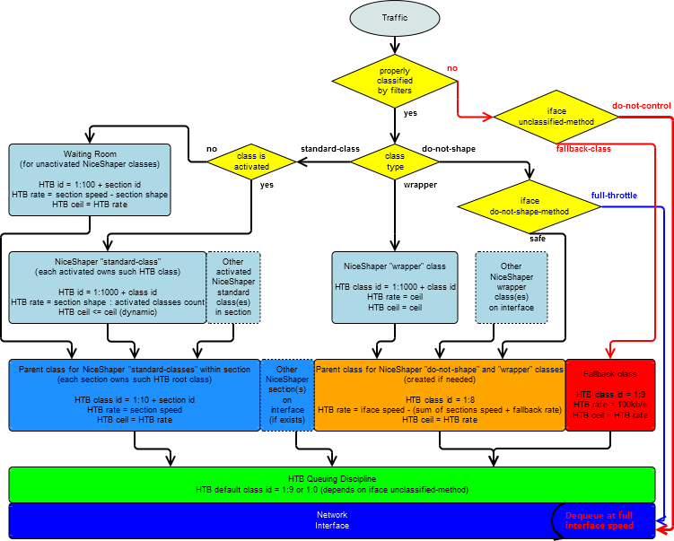

Table of Contents
Introduction and requirements
Configuring traffic shaping in Linux could be quite complex task. The main goals of NiceShaper are to be intuitive and flexible. This approach is achieved by simplifying things which are not easy in HTB, it means giving the ability to use the selected subset of QOS features which are the most important to have available. However, also adding additional features.
For sure, it's possible to create an entry configuration without reading this documentation document using example configuration files included in the program package. At least solid knowledge about IP networks is rather must to have. So, let's adjust internet access parameters, in /etc/niceshaper/config.conf file, and collect the hosts or classes list in /etc/niceshaper/class.conf file, then execute the niceshaper start command. It's done! Just so simple to start using NiceShaper. Use the niceshaper status command to observe how it works. But, keep in mind, after you get the first look onto the examples, then it's worth to look on documentation unless you are not interesting in another features. Still, don't be fear when you do not understand everything here as it's far beyond of your needs for the beginning.
In minimal configuration you need the router with your favourite Linux distribution. Iptables tool installed. HTB, SFQ packet scheduling algorithms, U32 and FW kernel filters compiled into the kernel. Hereinafter, HTB class means HTB packet scheduling class while NiceShaper class works on top of HTB class. Queuing algorithms means SFQ and the other classless queueing disciplines. Kernel filters means U32 and FW packets classifiers while NiceShaper filter works, again, on top of such kernel filters and/or iptables rules. In most popular Linux distributions HTB, SFQ, U32, and FW are by default compiled into the kernel or available as modules. Unfortunately, IMQ support is unusual to be compiled into the iptables and kernel.
For purpose of this documentation we assume that we have a router equipped with two interfaces. WAN is connected to the eth0 interface and LAN to the eth1. Example public IP address of the router is 198.51.100.100 and LAN network is 192.168.0.0/24.
NiceShaper uses egress shaping approach for traffic shaping. Therefore, it's fundamental that classes which control the forwarded traffic have to be placed on the interface which is outbound for such traffic. So, in assumed environment, shaping of download traffic has to be placed on eth1, but shaping of upload traffic has to be placed on eth0. Why? Because, for above assumptions, downloaded packets incomes into the router via eth0 interface and then are sent to the local network via eth1 interface. It makes the eth1 the outbound interface for download. Explanation for opposite direction is analogical.
Proper choose of outbound interfaces is crucial for configuration of NiceShaper hosts, classes, and several directives. For example, if LAN network is hidden behind NAT then it's needed to shape upload traffic using packet marking method. In this case, it's needed to put the egress interface (eth0) into the mark-on-iface directive. Additionally, IMQ interfaces as a workaround method for NAT problem are supported as well. Both, packets marking and IMQ interfaces are documented in hereafter.
Once again, these example interfaces are valid for previous assumptions but not necessarily for your router.
Words about interfaces notation. Neither Iptables nor Iproute understand concept of the network interface aliases. Thus colon and alias number should be omitted from the configuration. It's completely safe. However, despite the fact that aliases does not matter, VLANs have to be indicated. The ethX.vid notation for tagged VLAN sub-interfaces is supported. While complementing about the VLANs in Linux, it's good to know that if you run traffic shaping on tagged sub-interface it's strongly suggested to completely abandon on the untagged main interface. Otherwise, you may find that kernel queues the tagged data frames twice. Once on tagged sub-interface and second time on physical one.
NiceShaper has good scalability on routers that forward traffic for up to more or less half thousand of hosts although there are notices about successful working for even thousand of hosts. In bigger networks hash tables should be used. Unfortunately, hash tables are unsupported so far.
Installation
Compilation dependencies are c++ compiler from gcc package, C and C++ standard libraries, and make utility. Unpacked package has to be compiled omitting configure step because NiceShaper is Linux only software, thus compilation procedure is simplified.
$ bunzip2 niceshaper-%{version}.tar.bz2
$ tar xf niceshaper-%{version}.tar
$ cd niceshaper-%{version}
$ make
$ su
# make install
Make install command creates all needed directories (/etc/niceshaper, /var/lib/niceshaper, and /usr/share/doc/niceshaper). It copies the compiled binary to the /usr/local/bin directory. However, the binary path may be changed using BINDIR environment variable. Example configuration files are copied to the /etc/niceshaper directory. If configuration files are already found, in target location, then files are copied with "-dist" postfix. The documentation and the rest of package content is copied to /usr/share/doc/niceshaper.
Configuration
Configuration files syntax
Required configuration files are config.conf and class.conf placed in /etc/niceshaper directory.
include file path - Used in these files allows including next one. This directive accepts absolute (with starting slash char) and relative paths (by default to /etc/niceshaper/).
Configuration consists the directives and the parameters which order is free and syntax is shown below:
parameter value [value] - Parameter with one or number of values separated with white spaces, for example:
directive parameter value [parameter value] - It's a directive with one or number of parameter-value pairs, for example:
section speed 20Mb/s shape 19Mb/s
Configuration parser splits values or parameter-value pairs into a separated lines, so depending on own preferences these examples can be written in another way:
- ceil 5Mb/s
- run dl
- run ul
- section speed 20Mb/s
- section shape 19Mb/s
Exceptions are: host, class, match, section headers, and macro headers. Their syntax is described later in documentation.
In addition to differences in syntax, directives are also divided according to the scope of operation: directives of global section, directives of functional sections, and directives of classes file. When it comes to the directives and parameters of classes, all, except for the class header and filters, can be placed in the functional sections configurations, thus effectively providing default values for all classes contained in such section.
The basic units for rate and capacity is b/s (bits per second) and B/s (Bytes per second). The prefixes are k (kilo) and M (mega). The suffix '/s' is not compulsory and the distinction between rate and the amount of transferred data is based on the context of use. Default unit for bandwidth is b/s (bits per second).
NiceShaper provides some special chars: Char "#" (hash) is using for comment out the rest of line. Comment block is "<# comment #>" and is using to affect some piece of configuration line. Commented configuration is useless. Char ";" means end of line, it gives you way to minimize length of configuration files by write a number of semicolon separated directives in one line.
Each configuration modification requires NiceShaper to be restarted.
Remember, all examples are only examples and might not be optimal for you, although they are good point to start working with NiceShaper.
Main configuration file - with example
Main configuration file, config.conf, is divided into the sections. First required section is named global. Additionally needed section, in practice two, and possibly even more, are functional sections. By design, functional section reflects one direction of traffic on one certain WAN connection connected to the router. So, each of WAN connections needs 2 functional sections in order to make complete traffic control. Each functional section includes it's own configuration, list of NiceShaper classes, and defaults for these classes.
Functional section may contain classes that work on various interfaces. Classes contained in any number of functional sections may be placed on a certain interface (only if configured to shaping traffic that flows in the same direction).
Main configuration file example:
- <global>
-
- run dl ul
- mark-on-ifaces eth0
- local-subnets 192.168.0.0/24
- auto-hosts dl eth1 ul eth0
- status unit kb/s
- status file /var/www/niceshaper/status.txt
- status file-owner root file-group root file-mode 644
- log syslog yes
- log terminal yes
- log file no
- <dl>
-
- section speed 20Mb/s
- section shape 18Mb/s
- mode download
- reload 2s
- low 256kb/s
- ceil 5Mb/s
- strict 70
- <ul>
-
- section speed 2Mb/s shape 1800kb/s
- mode upload
- reload 1s
- low 64kb/s
- ceil 256kb/s
- strict 70
Global section directives and parameters:
- run - List of configured functional sections to be launched.
- mark-on-ifaces - List of interfaces to turn packets marking on. It means that needed iptables rules will be created in mangle table and FW kernel filters will be used in place of U32 filters. This option allows control traffic outgoing from hosts located behind a NAT to the Internet or to use iptables filters instead of U32 kernel filters, to get additional filtering abilities.
- local-subnets - Local subnet or list of space separated local subnets which traffic is forwarded. Packets routed to specified subnets are targeted to the ns_dwload chain, respectively packets originated from such subnets are targeted to the ns_upload chain.
- lang en|pl - Specifies the language of messages. By default this value is taken from LANG environment variable. Apart from default English language you can use pl_PL.UTF-8 in LANG environment variable or just use lang directive with pl value.
- auto-hosts section interface [section interface] - Expects the pairs of functional sections connected with the interfaces. This directive could appear to be quite complicated, but could be easier understand after looking into the class.conf file. Thanks to auto-hosts feature, it's easy to quickly configure traffic shaping using host directive within class.conf file, just by defining the list of local network hosts using their IP addresses and chosen names. Auto-hosts directive tells the functional sections which are expected to contain the classes, automatically created behind the host directive, and tells the interfaces onto which such classes have to be placed.
- iface-<dev> {speed|do-not-shape-method|unclassified-method|fallback-rate|mode} - Configuration of network interface. Name of the directive itself includes a name of an interface, such as: iface-eth0, iface-imq1, etc.
-
- speed - Defines the physical interface throughput, for example 100Mb/s or 1000Mb/s for Ethernet. Value of this parameter is required to be provided in case of interfaces on which wrapper or do-not-shape type classes are used unless do-not-shape-method value is full-throttle.
- do-not-shape-method safe|full-throttle - How do-not-shape classes work. Default: safe.
-
- safe - Kernel filters created by NiceShaper flows do-not-shape classes' traffic to a common shared HTB class created for such purpose (described in "cooperation with HTB"). This solution does not provide full interface speed for transfers from the router to a local network however protects traffic handled by the standard classes.
- full-throttle - Traffic from do-not-shape type classes are dequeued at hardware speed. Shared HTB class described in safe method is omitted. Note, this method allows full saturation of the network interface, thus effectively prevents effective shaping of traffic handled by the standard classes.
- unclassified-method fallback-class|do-not-control - Configure the way of handle traffic unclassified by defined NiceShaper filters. Default: fallback-class. WARNING: It is serious problem when you have unclassified traffic outgoing from controlled interface!
-
- fallback-class - Unclassified traffic flows to fallback class then traffic is almost blocked to minimize impact on internet throughput usage.
- do-not-control - Bring back behaviour from version 1.0pre3 and earlier. It means that unclassified packets are dequeued at interface speed. It is highly incorrect and this option is compromise.
- fallback-rate - Throughput assigned to a HTB class which will handle unclassified packets. This is nothing but class in HTB designated as the default. To allow link sharing to work correctly nothing should flow into this HTB class. Default: 100 kb/s.
- mode download|upload - The wrapper and do-not-shape classes, if work alone on an interface (it means, not together with standard classes), require to set the flow direction of traffic controlled on this interface.
- status {unit|classes|sum|do-not-shape|file|file-owner|file-group|file-mode|file-rewrite} - Reporting current status of classes parameters (ceil and observed traffic). File parameters only apply if automatic dump to file is enabled.
-
- unit - Units for traffic values. Default: kb/s.
- classes all|active|working|no - Define which classes should be displayed in reports. Default: working.
-
- all - Display all configured classes.
- active - Display active classes only.
- working - Display classes with activity for no longer than 'hold' parameter defined.
- sum top|bottom|no - Where to display summary of section utilization.
- do-not-shape yes|no - Turns on accounting and displaying of do-not-shape type classes. Warning: this option turns on usage of iptables rules for all classes which belongs to section which have got at least one do-not-shape class. After that it affect all sections with the same mode value. Default: no.
- file filepath|no - Automatically and constantly dump status to the specified file, for example to be web accessible. Default: no.
- file-owner - Status file owner. Default: root.
- file-group - Status file group. Default: root.
- file-mode - Chmod for status file. Default: 644.
-
- file-rewrite - Set the frequency of the automatic dump to a file in seconds in the range from 1s to 3600s. Along with lowering the value of this parameter increases the frequency of disk operations. Default: 30s.
- listen {address|password} - A working NiceShaper process, after you run niceshaper status or show command, provides demanded information using TCP/IP protocol. Thanks to this directive, it's easy to enable the remote access, for example from Administrator's workstation.
-
- address ip[:port] - Parameter replaces a listening IP address and an optionally port, enabling remote connections. By default, because of security, NiceShaper listens on 127.0.0.1:6423/TCP, so doesn't enable the way to connect from remote. You can connect to working NiceShaper using niceshaper status and show commands with runtime parameter --remote.
- password - By default password for connection authorization is randomly generated each time while NiceShaper starts. Locally triggered connections reads password (and the IP address and listening port) from /var/lib/niceshaper/supervisor.info. For remote calling it is required to set password. You can connect using password within runtime parameter --password.
- log {syslog|terminal|file} - Information, warnings and errors logging.
-
- syslog yes/no - Log to syslog. Default: yes.
- terminal yes/no - Default value is yes, but after proper initialization automatically turned to no.
- file file|no - Log to full path specified file. Default: no.
- iptables {download-hook|upload-hook|imq-autoredirect} - Directive for iptables configuration.
-
- download-hook PREROUTING|POSTROUTING - Change default iptables build-in chain for mode download. Default: POSTROUTING). Changing of this parameter only in justified cases, it's not recommended.
- upload-hook PREROUTING|POSTROUTING - Change default iptables build-in chain for mode upload. Default: POSTROUTING. In versions older than 1.2pre1: PREROUTING. Changing of this parameter only in justified cases, it's not recommended
- target ACCEPT|RETURN - Target for all of NiceShaper created filters. Default: ACCEPT.
- imq-autoredirect yes|no - Automatic redirection on IMQ device. It makes -j IMQ --todev rules in iptables. Default: yes.
- fallback {iptables} - In case of problems with some system components allows you to launch in emergency by other less sophisticated methods.
-
- iptables - Versions 1.0pre2 and newer use iptables-save and iptables-restore tools to speed up start. This option allows you to return to pure and slow iptables command. However, in this case, starting NiceShaper with many classes can be a lot of time consuming.
- debug {iptables} - Prints system commands before execute it.
-
- iptables - With fallback iptables prints iptables commands before send them to system. Without this option leaves in /var/lib/niceshaper an iptables-restore script.
Functional section directives and parameters:
- section {speed|shape|htb-burst|htb-cburst} - A few functional section related parameters.
-
- speed - A throughput of the Internet Access. Really stable throughput is expected here instead of just declared by Internet Access Provider.
- shape - Traffic level expected to be watched over all the time while NiceShaper is running. Recommended range of values is 90-95% of section speed. In practice, the best value for the slower than 1Mbit/s or highly loaded Internet Access is close to the suggested 90% while for much faster or not so much loaded Internet Access better value is close to the suggested 95%. Interactive connections works in uncomfortable conditions if this value is set too high. Respectively, a large part of throughput could be wasted if set too low. Common mistake is setting the section shape value too high to even expect the traffic whenever exceeds it. In such scenario the Dynamic Traffic Shaping algorithm of NiceShaper can't work fully properly, because NiceShaper starts to work more aggressively, against the most throughput consuming hosts, when the load level of section (precisely, the sum of traffic of classes contained within the section) above section shape is observed.
- htb-burst - Burst value assigned to the root HTB class which is the parent for the rest of classes contained within the section. Discussed more detailed in the description of the class HTB burst parameter. By default it's automatically calculated as high as the highest value of the children classes.
- htb-cburst - Analogically to htb-burst, but for ceil.
- reload - How often adjust(reload) the classes contained within functional section. Constant monitoring and adjusting the classes is the main point of dynamic traffic shaping feature. The lower value, the faster reaction is obtained, but instead increased CPU load could be observed. NiceShaper, in order to help you find the best value, every hour for each running section generates and logs load reports. Effectively, high values transform dynamic traffic shaping into the almost static shaping, therefore values greater than 5s are not recommended. NiceShaper with high reload value can't react efficiently to quick traffic changes. Proper values are within the range of 0.1s to 60s with the step of 0.1s.
- mode download|upload - It is a key parameter to ensure the proper cooperation with iptables. For all sections working in download mode a shared chain, ns_dwload, is created. This chain is targeted from the built-in POSTROUTING chain. Similarly, for the section of upload mode a chain called ns_upload is created with a source in the POSTROUTING chain as well (in version 1.2pre1 and earlier the PREROUTING chain was the source for ns_upload). Changing a built-in chain can be achieved using iptables directive with download-hook and upload-hook parameters, but is highly not recommended unless you are strongly advanced Administrator.
i
Any of the classes parameters can be placed in functional section configuration, thus becomes to be defaults for all of classes contained in such section.
Hosts and classes in NiceShaper
File /etc/niceshaper/class.conf holds the list of hosts and/or classes definitions with their configuration. We can simply assume that NiceShaper class is an extension on top of HTB class. NiceShaper class has to be built by a header, at least one filter and possibly additional options. Corresponding HTB class is created when NiceShaper notices activity, afterwards removed after a certain period of inactivity. Effectively, only for active NiceShaper classes the HTB classes coexists at the same time what gives the optimal rate value of the HTB classes.
Each packet which leaves the network interface is classified to the first matching class using filters. It is vitally important to define classes for entire traffic. If not, there occurs the traffic that is not monitored and not properly shaped. In the other words, if one or more of local LAN hosts is not assigned to the classes, these hosts falls beyond the section shape value.
Hosts:
NiceShaper classes are advanced and flexible tool, but simple directive named 'host' is in most cases sufficient and clear way to create the fairly traffic shaping for all of common hosts in local network. It's the one of elements thanks to which NiceShaper offers such comfort. Host directive gives a method to configure traffic shaping in NiceShaper just by write down the list of all LAN hosts' IP addresses and assign names to them.
To define host there is needed the list of sections in which host must be placed paired with interfaces on which traffic shaping occurred, followed by IP address, and assigned name. Host directive may be placed into one or more of running sections. Sections and interfaces values are just copied from auto-hosts directive, thus it's not needed to repeat them within each used host.
It can be assumed that host directive is some kind of NiceShaper macro. NiceShaper automatically translates the host directive into the classes and filters.
NiceShaper host definition is placed in one line, using the syntax as given below:
host ip name
For example:
- host 192.168.0.10 pc10
- host 192.168.0.11 pc11
These host directives will be translate, by NiceShaper configuration parser, to these classes:
- class dl eth1 pc10
- match dstip 192.168.0.10
- class ul eth0 pc10
- match srcip 192.168.0.10
- class dl eth1 pc11
- match dstip 192.168.0.11
- class ul eth0 pc11
- match srcip 192.168.0.11
Tests dstip or srcip are used depending on section mode.
Host is pointed out by IP address only. When another filtering tests or overwriting the default parameters are needed then classes have to be used instead of hosts.
Class structure:
NiceShaper, in the current version, provides 4 types of classes. These are the standard class and the classes for special purposes: virtual, wrapper, and do-not-shape. Virtual class is described in the "Virtual class type" and the last two types in the "Router's self generated traffic shaping".
Class definition starts with the class header and ends with the next class header.
- class section interface name - Header of the standard class. Standard class operates within the section to which it belongs and is subject to the dynamic traffic shaping.
Where:
- section - Section which the class belongs to.
- interface - Network interface (egress) on which the traffic shaping occurs, it means where the HTB class resides.
- name - Assigned name, displayed by the niceshaper status command.
Each class must contains one or more filters:
match test <test> [test <test>]
More than one test can be joined in one filter to be more specific on assign traffic to classes. Classes can contain number of filters to allow aggregating into one class, more than one host's traffic or whatever pointed out by test.
Filters applies to packets outgoing from the interface of class (egress shaping). Kernel filters are created when NiceShaper starts, but Iptables rules if needed as well.
An example of the simplest class is as follows:
- class dl eth1 pc55
- match dstip 192.168.0.55
Semi-colon can be used instead of new line:
- class dl eth1 pc55; match dstip 192.168.0.55
Class directives and parameters:
- low - Minimal rate for class. The class with observed traffic level below this value is not the subject to participate in the section overload. Default: 8b/s.
- ceil - Maximal rate for class: Default is equal to section shape.
- rate - Static rate. When used, low and ceil are set equally to this value and class shaping becomes to be static instead of dynamic.
- strict 0 to 100 - A key parameter of the dynamic traffic shaping algorithm. This parameter is very useful in case you want to prioritize the classes between each other. Strict parameter indicates to the class, by percentage within the low to ceil range, greater responsibility threshold for the overload if occurs. Default value is 70. For example, if low is 100kB/s and ceil is 200kB/s then for strict equal 50 higher responsibility level is above 150kB/s, so it is equal to 170kB/s for strict 70. Overload is a condition where the observed section traffic exceeds the section shape parameter value. If a value of the strict parameter is lower in relation to the other classes then the class is treated more restrictive. Similarly, higher values increase the tolerance to the class traffic. More specifically, the designated class responsibility for the overload is a function of the strict parameter and traffic generated by this class. This function is a linear increasing function, consists of a few straight lines. The traffic lower or equal to the low value gives no responsibility. Traffic within the range between the low and the number indicated from strict, gives a low degree of responsibility. When the load is equal to the value indicated from the strict, then there is exactly the average responsibility. When the load exceeds it, responsibility becomes high. The maximum responsibility occurs when a load is equal to the ceil value.
- hold - Inactivity time after which class is unloaded from HTB: Default: 30s.
- set-mark - Parameter applies in a situation where packets marking on class interface is enabled by mark-on-ifaces directive. Then, use it to set the value of the mark. By default, each class is automatically assigned with the proper mark value. More details in the "Packets marking".
- htb {prio|scheduler|burst|cburst} - HTB class parameters.
-
- prio - HTB class priority. Proper values are within the range of 0 to 7 where lower value is greater priority. Default: 5.
- scheduler sfq|esfq|no - Queuing algorithm for a HTB class. Default: sfq.
- burst - Determines how large amount of data can be sent at full interface speed, without going to handle the traffic of another classes. It can have a positive impact for the classes that supports web traffic or anything else of a best effort nature. By default, the burst is calculated by the algorithm obtained from the iproute package, but sometimes the calculated value is too low, so causes difficulties in taking advantage of high capacity of tens of megabits for a large number of simultaneously working classes. However, this problem mostly not concerns the ordinary classes itself, but HTB root class created automatically for each section as a parent for ordinary classes. In case of problems with the saturation of high throughput internet access, increasing the value of burst and cburst for sections could be tried. See section HTB-burst and section HTB-cburst parameters.
- cburst - As burst, but for ceil.
- sfq {perturb} - SFQ queuing algorithm parameters, if used.
-
- perturb - SFQ perturb. Default: 10.
- esfq {perturb|hash} - ESFQ scheduler parameters, if used.
-
- perturb - ESFQ perturb. Default: 10
- hash classic|src|dst - ESFQ hash. Default: classic.
Each parameter of classes can be placed into the functional section configuration, becomes to be defaults for each of contained classes. Next, if needed, these defaults can be override in certain classes with the individual values.
Basics filtering tests:
- proto tcp|udp|icmp - Protocol of the packet.
- srcip - Source IP address.
- dstip - Destination IP address.
- srcport|sport - Source port. Proto test is also required to be added.
- dstport|dport - Destination port. Proto test is also required to be added.
- from-local - Filtering test intended for the local machine outgoing traffic (local machine means router on which this instance of NiceShaper works). In other words, the IP address is configured on one of the router's interfaces. Replaces the srcip. If iptables is in use and iptables hook is changed to the PREROUTING or interface of the class works in upload mode then filter is duplicated into the POSTROUTING chain.
- to-local - Works analogously to from-local. Allows filtering the local machine incoming traffic. Replaces the dstip. If iptables is in use and hook is POSTROUTING (default) or interface of the class works in download mode then filter is duplicated into the PREROUTING chain.
- out-iface - The specified interface is added to iptables filter as the outgoing interface (-o). It makes sense only if the interface of the class is the IMQ interface, in this case it points out the physical interface.
- in-iface - The specified interface is added to iptables filter as the incoming interface (-i). Analogously, it makes sense only if the interface of the class is the IMQ interface, in this case it points out the physical interface.
Srcip and dstip can match single IP address or network subnet with the mask. In the second case the bits number notation (for example "/24") or dot-decimal notation (for example "255.255.255.0") is allowed. If FW kernel filter is used on the interface, via mark-on-ifaces parameter, mask can be non-continuous (for example 255.255.128.255).
Example filters:
- match srcip 192.168.0.77 - Packets whose source IP address is 192.168.0.77.
- match srcip 192.0.2.1 srcport 110 proto tcp dstip 192.168.0.0/29 - Mail retrieved using POP3 from the server with 192.0.2.1 IP address to the subnet 192.168.0.0/29.
Tests requiring packets marking on a class interface:
Iptables is equipped with a huge number of filters which are unfortunately not feasible using U32 kernel filter. Therefore, these filters require packets marking enabled using mark-on-ifaces directive. Then each packet captured and marked by iptables can be easily enqueued to the appropriate HTB class thanks to assigned mark value.
CAUTION! Some of these filters may need additional kernel and iptables features compiled in.
- not-srcip - Source IP address, or subnet, other than specified.
- not-dstip - Destination IP address, or subnet, other than specified.
- not-srcport|not-sport - Source port other than specified. Proto test is also required to be added.
- not-dstport|not-dport - Destination port different than specified. Proto test is also required to be added.
- length - Packet length in bytes, for example "500", ":500" (lower or equal 500), "500:" (500 and greater), "128:500" (128 to 500).
- state new|established|related|invalid|untracked - Packet state:
-
- new - Packets starting a new connection.
- established - Packets belong to already established connection.
- related - Packets related to existing connection.
- invalid - Packets impossible to be recognized.
- untracked - Packets which do not belong to the tracked connection.
- tos - TOS field value.
- ttl - TTL equal to the specified value.
- ttl-lower - TTL lower than the specified value.
- ttl-greater - TTL greater than the specified value.
- mark - Packets with specified mark value associated. This mark value will be protected, it means NiceShaper will not assign automatically your values to any other classes. Warning: be careful to rely on your mark value after the packet leaves a NiceShaper iptables chain, because your value will be replaced with automatically generated new one. You can keep your original value using set-mark class parameter.
Macros of the class.conf file
Macros in the classes file are introduced to improve creating of a lot of classes (or any of configuration directives) if they are similar. Macro iterates in a loop and duplicates specified area. Macro is built with a header, content and closing tag. Header is built by curly brackets that contains macro name and parameters. Content is an ordinary directives and parameters. In content you put some special chars: $ (dollar) and % (percent). These chars are replaced by expected number or string. Macro closing tag is the curly brackets which contain slash inside.
NiceShaper shares 3 macro types: sequence, foreach-elem, and foreach-pair.
Sequence macro:
{sequence from to} content {/} - Sequence macro generates the ascending numeric values in the specified range and applies these in the place of dollar special character. Values "from" and "to" have to be positive integers in the range of 0 to 65535.
Example of sequence usage:
- {sequence 10 12}
- class dl eth1 pc$
- match dstip 192.168.0.$
- {/}
Macro generates:
- class dl eth1 pc10
- match dstip 192.168.0.10
- class dl eth1 pc11
- match dstip 192.168.0.11
- class dl eth1 pc12
- match dstip 192.168.0.12
foreach-elem macro:
{foreach-elem list} content {/} - Foreach-elem macro gets each element from the given, space separated, list of values and applies these in the place of dollar special char. Values can be numeric or text, separated by white spaces.
Example of foreach-elem usage:
- {foreach-elem 10 12 15}
- class dl eth1 pc$
- match dstip 192.168.0.$
- {/}
Macro generates:
- class dl eth1 pc10
- match dstip 192.168.0.10
- class dl eth1 pc12
- match dstip 192.168.0.12
- class dl eth1 pc15
- match dstip 192.168.0.15
foreach-pair macro:
{foreach-pair pair_of_values [,pair_of_values]} content {/} - Foreach-pair macro gets pairs of values from the list. Pairs are separated by commas, elements in the pair are separated by white space. First element in the pair is named a key and is applied in the place of percent char. Second element in the pair is inserted in the place of dollar. Values can be numeric or text.
Example of foreach-pair usage:
- {foreach-pair accounting1 11, accounting2 12, marketing1 21}
- class dl eth1 %
- match dstip 192.168.0.$
- {/}
Macro generates:
- class dl eth1 accounting1
- match dstip 192.168.0.11
- class dl eth1 accounting2
- match dstip 192.168.0.12
- class dl eth1 marketing1
- match dstip 192.168.0.21
Packet marking
Packets marking is a procedure of assigning the virtual tag value to packet. Thanks to that it's still possible to identify packet sender after the source address becomes changed by SNAT (Masquerading). Technically, the value is assigned by iptables, maintained by the Linux kernel and recognizable by iptables and the FW kernel filters. FW kernel filters classifies packets into the appropriate HTB classes using tests based on a virtual mark value instead of the packet header.
Marking packets mostly do not require patching iptables, iproute, or kernel. NiceShaper manages all completely automatically, so it's very easy to use this mechanism. Therefore, packet marking is a good way to avoid using the IMQ interfaces, which are comfortable but required patching the operating system important components. Packets marking easily allows traffic shaping of packets uploaded from privately addressed local network.
So, if packets marking on interface is turned on, by mark-on-ifaces directive, U32 kernel filter on that interface is replaced with FW and NiceShaper assigns a unique mark value for each class working on such interface. All is done completely automatically. However, if necessary, it's possible to make intervention in this process thanks to a set-mark parameter. The value of set-mark has to be unique for each class.
Accepted mark values are in the range of 0 to 4294967295 (32bit unsigned value) written using decimal or hex (prefixed with "0x").
Using IMQ interfaces
NiceShaper supports IMQ compiled in AB mode (after NAT in PREROUTING chain and before NAT in POSTROUTING chain).
Within the configuration of NiceShaper, IMQ interfaces are handled almost the same way as physical interfaces. You can forget about their virtuality, with the exception of NiceShaper filters require to indicate a physical interface using out-iface test (or in-iface if iptables hook is changed to PREROUTING).
Example snip from class.conf file:
- class ul imq0 pc10
- match srcip 192.168.0.10 out-iface eth0
- class ul imq0 pc11
- match srcip 192.168.0.11 out-iface eth0
NiceShaper automatically redirects traffic to IMQ interface. This behaviour is configurable by iptables imq-autoredirect directive in the global section. If, for some reason, you disable the automatic redirect to the IMQ interface, you need to make it yourself for NiceShaper using iptables ... -j IMQ --todev imqX.
Triggers
Triggers is the feature which automatically changes the values of indicated class parameters when defined condition occurs. In the current version NiceShaper two trigger types are implemented: alter and quota.
Controllable parameters of the class:
- low - Minimal rate of the class.
- ceil - Maximal rate for the class: .
- rate - Static rate.
Control parameters of triggers:
- alter {low|ceil|rate} {time-period} - Alter trigger replaces the defined parameters in a certain period of time. For example to increase allocations at night.
-
- {time-period} hh:mm-hh:mm - Specifies the time range when trigger is activated (for example 22:00-05:00). Default: no - trigger is off.
- quota {low|ceil|rate} {day|week|month} [reset-hour] [reset-wday] [reset-mday] - Quota trigger changes the selected class parameters when the transmitted amount of data exceeds the limit. This trigger is equipped with three counters: daily, weekly, and monthly. Quota trigger is activated whenever one or more counters exceed a limit.
-
- day - Daily limit of transmitted data. The minimum value is 1MB, supported units are MB, GB and TB. Default: no - daily counter is off.
- week - Weekly limit.
- month - Monthly limit.
- reset-hour gg:mm - The time at which reset of the daily counter occurs.
- reset-wday 1 to 7 - Similarly to the daily quota, specifies the day of week for resetting the weekly counter. 1 is Monday, 2 is Tuesday, and so on up to 7 which is Sunday. Reset takes place at the first section reload after midnight. Default: 1 - Monday.
- reset-mday 1 do 31 - Similarly to the weekly quota, specifies the day of month. If the given value exceeds the number of days within current month, for example 31 in February, reset occurs on the last day of such month. Default: 1.
Triggers are class directives, thus most convenient way is defining them within the section. For example:
- <dl>
-
- section speed 512kB/s shape 450kB/s
- low 10kB/s
- ceil 100kB/s
- alter ceil 200kB/s time-period 22:00-5:00
- quota ceil 20kB/s day 2GB week 20GB month 500GB
- ...
The quota trigger is higher prioritized than the alter trigger if both are enabled.
Counters of the quota trigger, while stopping NiceShaper, are stored in files named "section_name.quota" placed in the /var/lib/niceshaper directory. These files are updated each time while NiceShaper is stopped and also during work every 5 minutes. If file write fails, counters will be irretrievably lost!
Triggers works only for standard-class.
Shaping of router self generated traffic
Traffic generated by the router for his own needs is mostly negligibly small and often doesn't need to be shaped. But, in real world, router with Linux often serves file shares to the local network (simpler scenario) or even serves some network services on the internet (harder scenario).
Due to the fact that the traffic shaping takes place at the outbound interface of the machine, shaping incoming traffic (both on the Internet and the LAN side) is difficult and requires using of the IMQ interfaces.
To practically deal with topic, the most convenient is splitting the description into the 4 separated scenarios.
In all scenarios, it's required to use from-local or to-local test in filters. In case of using IMQ interfaces there is the additional in-iface test required for incoming traffic, or out-iface for outgoing traffic. It's important to let the NiceShaper know the physical interface at which packet arrives or leaves the router and also to distinguish WAN side from LAN side traffic.
Keep in mind that in most cases this special purpose classes should be put on the top of the list of classes.
To remind assumptions from documentation introduction, WAN is connected to eth0 and LAN is connected to eth1. Public address of the router is 198.51.100.100, second public address for services is 198.51.100.101, private address is 192.168.0.1, and private network is 192.168.0.0/24.
Traffic between the router and the local network (uplink throughput is not involved):
- 1. Router -> Localnet - Router sends the own generated traffic to the local network.
- 2. Router <- Localnet - Router is the final recipient of the traffic from the local network.
Traffic between a router and a local network is not expected to be shaped or shaping should be slight. This traffic shouldn't be shaped to the fact that the local Ethernet connection is mostly the fastest. Another big mistake could be accounting local traffic to the uplink traffic and summarizing into the Internet impacting traffic generated by hosts. Classes in number 1 and number 2 scenarios have to be wrapper or do-not-shape types.
- class-wrapper - Class of this type has a fixed bandwidth, doesn't belong to any section, observed traffic isn't taken into any section traffic summary and isn't accounted by shaping algorithm. Class wrapper requires rate parameter. This class is useful when you want to restrict traffic that does not affect uplink bandwidth, for example transfer from a local file server to a LAN network, while the only reason for shaping is to not allow the overload of, for example the local wireless network.
- class-do-not-shape - Class of this type doesn't receive the HTB class, only kernel filters are created in order to bypass the section root HTB class. Thanks that traffic is not restricted like in other classes. Class of this type, identically as type wrapper, doesn't belong to any section, observed traffic isn't taken into any section traffic summary, isn't accounted by shaping algorithm. Depending on status do-not-shape value, NiceShaper may create rules in iptables, so we can account and show bandwidth usage within status, but be carefully, as it adds additional workload to the operating system. At the end, let say that wrapper class is a safer option for the local traffic.
Wrapper class and do-not-shape class doesn't belong to any section so their header is not the same as the standard class header:
class-wrapper|class-do-not-shape interface name
1. Router -> Localnet - Router sends the own generated traffic to the local network:
Traffic in this scenario is, for example: local file sharing server, FTP server, local IMAP, or POP3 servers, etc.
Using do-not-shape type class - traffic is local so you do not want to shape and account:
- class-do-not-shape eth1 router_to_local
- match from-local 198.51.100.101 dstip 192.168.0.0/24
- match from-local 192.168.0.1 dstip 192.168.0.0/24
Using wrapper type class - traffic is local but we have WiFi bridge on LAN and we are afraid to overload, so we process shaping but with statically allocated bandwidth and still do not account to any section:
- class-wrapper eth1 router_to_local
- match from-local 198.51.100.101 dstip 192.168.0.0/24
- match from-local 192.168.0.1 dstip 192.168.0.0/24
- rate 20Mb/s
2. Router <- Localnet - Router is the final recipient of the traffic from the local network:
Traffic from the LAN to the router. For example, sending e-mails via the local SMTP server, place the files on local file sharing server, etc.
Using do-not-shape type class - NiceShaper use POSTROUTING chain at iptables and doesn't use ingress shaping at kernel QOS. So, there is no requirement to create any do-not-shape type classes as traffic described in this scenario is uncontrolled in default configuration.
Using wrapper type class - but, if we want to use wrapper type class (analogically to scenario #1), we need to use the IMQ device.
- class-wrapper imq1 router_from_local
- match to-local 198.51.100.101 srcip 192.168.0.0/24 in-iface eth1
- match to-local 192.168.0.1 srcip 192.168.0.0/24 in-iface eth1
- rate 20Mb/s
Traffic between the router and the Internet (used uplink throughput):
- 3. Router -> Internet - Router sends the own generated traffic to the Internet.
- 4. Router <- Internet - Router is the final recipient of the traffic from the Internet.
Putting Internet accessible services on the router should be avoided. If SNAT and Internet services on WAN side are used, services should use another public IP address. In this case, requirements of two public addresses is forced because there is no way to distinguish forwarded to local LAN and NATed traffic, in the PREROUTING chain of mangle table. This distinguish is possible in INPUT chain (simplifying), but it is not allowed to redirect traffic to the IMQ device from INPUT chain.
3. Router -> Internet - Router sends the own generated traffic to the Internet:
Packets generated locally while sending to the internet, for example mail service, web pages, and the other services on the router.
In this examples, two classes are created in order to separate traffic of two different services.
- class ul eth0 router_www_to_internet
- match from-local 198.51.100.101 proto tcp srcport 80
- ceil 64kB/s
- class ul eth0 router_mx_to_internet
- match from-local 198.51.100.101 proto tcp dstport 25
- ceil 128kB/s
Using class contained within upload mode section and filter with a from-local test don't require extensive commentary here. Provide belief that traffic from the router to the internet is properly accounted.
4. Internet => Router - Router is the final recipient of the traffic from the Internet:
This scenario occurs when the router retrieves traffic from the internet, for example the web pages retrieves by a proxy server or system updates that may steal the bandwidth from clients.
- class dl imq0 router_from_internet
- match to-local 198.51.100.101 in-iface eth0
- ceil 1Mb/s
Using class contained within download mode section and a filter to-local don't require extensive commentary here too.
By default, the classes that belong to download mode section put their filters in the chain targeted from POSTROUTING where our packets will never arrive, so a to-local test creates the cloned rule in the PREROUTING chain.
Advanced topics
Cooperation with iptables
In some cases NiceShaper uses iptables. In such cases, creates rules in mangle table when starting and flushes them when stopping. You should avoid this cases whenever possible, because rules for many NiceShaper classes generates additional system load. If at least one NiceShaper class in section required iptables rule, then rules are created for all NiceShaper classes in this section. What's furthermore worst, iptables rules are created for each section with the same mode parameter value.
To be precise, iptables rules are required and created in the following cases:
- Packet mangling - It means packets marking or redirecting onto IMQ interfaces. In the case of IMQ redirecting, additional load are smaller than in case of packet marking, because in case of packet marking, iptables rules counters are verified every section reload.
- Checking for classes activity - This operation occurs when FW kernel filters are used instead of U32 (mark-on-ifaces directive). Iptables rules are required here, because FW kernel filters haven't got embedded counters, in opposite to U32 kernel filters.
- Checking for activity and traffic of a virtual and a do-not-shape classes accounting. Second one is true if the value of status do-not-shape parameter is true. It occurs, because do-not-shape class type is not equipped with HTB class, so iptables rule is only way to get the traffic volume. Sadly, generates higher system load.
Reading any of the chains don't occur more often than 10 times per second. If a section is reloaded again, before expire time, the previously cached values will be used.
Cooperation with HTB
NiceShaper creates QOS framework based on HTB on each controlled interface. This framework is built like described on diagram below. It contains HTB classes, queuing algorithms and kernel filters. HTB classes build the tree hierarchy where traffic is propagated, from the top to the bottom, as you see.
NiceShaper almost doesn't use the tc program, but communicates directly with the Linux kernel using Netlink protocol (the code that provides this functionality is partially based on iproute code). It's the most efficient way to manage QOS objects.

On the bottom level of tree there are HTB classes which are the parents for NiceShaper classes which you define in configuration. These HTB classes share the full speed of the interface, but do not borrow from each other.
These special HTB classes act as:
- 1. HTB classes of each of NiceShaper sections which work on the interface.
- 2. HTB class whose is parent for do-not-shape and wrapper type classes.
- 3. HTB fallback class which works with unclassified traffic.
1) Each section which works on an interface gets the own HTB class with throughput equal to the section speed value. This HTB class becomes parent for each of child HTB class contained within such section. One of child HTB classes is automatically created and named "Waiting Room". Traffic classified by filters in first step is directing into the Waiting Room. In second step, when section is reloading, filter are modified in order to directing traffic to newly created HTB class. After defined time of inactivity this newly created HTB class is removed and kernel filter directs traffic to Waiting Room again. This time of inactivity is set by hold parameter which default is 30 seconds. In this solution in one time there are only us much HTB classes as activated NiceShaper classes, thanks to that HTB class rate parameter value is optimal.
2) This HTB class as parent for do-not-shape and wrapper classes is created if on the interface works one of or both of specified class types. In case of do-not-shape class it is true only with iface do-not-shape-method safe parameter. This HTB class throughput is calculated from iface speed minus sections speed minus fallback class.
3) HTB fallback class works with whole traffic outgoing from the interface and unclassified by filters. In proper configuration this class should be idle all the time, otherwise you should looking for lacks in defined classes and filters.
Virtual class type
Virtual is the next type of classes in NiceShaper. Header of such class:
class-virtual section interface name - Class of this type has entries in iptables, but not in HTB. Virtual class is not the tool for any traffic shaping, it's useful for measuring and reporting of utilization of observed traffic. Class of this type belongs to the section, but observed traffic is ignored by the dynamic traffic shaping algorithm. Because of this feature, packets matched by virtual class need to be then matched by standard class which finally catches such traffic.
Example of such classes:
- class-virtual dl eth1 pc10-v-http
- match dstip 192.168.0.10 proto tcp srcport 80
- class-virtual dl eth1 pc10-v-https
- match dstip 192.168.0.10 proto tcp srcport 443
- class dl eth1 pc10
- match dstip 192.168.0.10
Example of the niceshaper status command results:
dl ceil - last-ceil ( last-traffic )
^g70-v-http^ ( 424kb/s )
^g70-v-https^ ( 608kb/s )
g70 5000kb/s - 5000kb/s ( 1032kb/s )